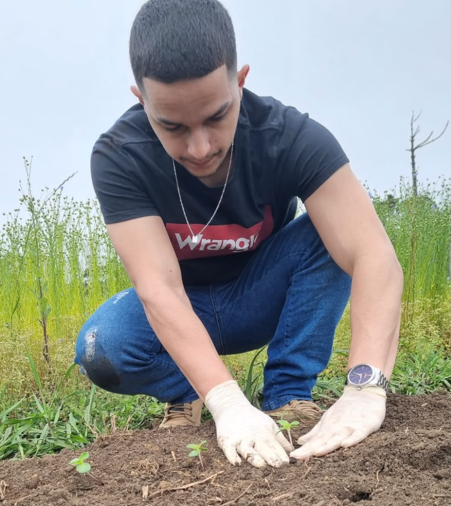

Desenvolvedor Web Júnior

Formações
• Graduando em Engenharia Agronômica pela UFSC - (CCR Curitibanos) - 7 ° Fase; • Atuei no II Simpósio de Agronomia da UFSC Curitibanos (01/11/2023 à 12/04/2024); • Oficina Python: noções básicas (12/04/2024 a 12/04/2024) Carga horária de 4 horas; • Atuei no projeto de extensão de Plantas e microorganismos em time-lapse (01/05/2024 à 31/03/2025); • Atuei como Tesoureiro Geral do CAACO (Centro Acadêmico de Agronomia da UFSC Curitibanos) (01/05/2024 à 31/03/2025); • Programador de Sistemas pelo Senac Curitibanos (23/02/2026 à 01/07/2026) C.H. 200 horas; • Desenvolvimento Web com IA (06/07/2026 à 02/12/2026) C.H. 240 horas.Sou um desenvolvedor apaixonado por tecnologia e aprendizado constante. Tenho conhecimento em: Java, Java script, CSS, HTML, MVC, Windows Builder, SQL Lite, CRUD, NodeJS, API Rest, TDD, BDD, Testes unitários, Testes integração.
| Dia | Manhã | Tarde | Noite |
|---|---|---|---|
| Segunda | OK | OK | OK |
| Terça | OK | OK | OK |
| Quarta | OK | OK | OK |
| Quinta | OK | OK | OK |
| Sexta | OK | OK | OK |
| Sábado | OK | OK | OK |
Currículo - Augusto Henrique Ribeiro Rigon - 29/07/2026